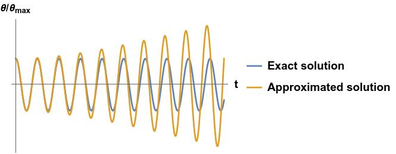

A brief introduction to perturbation theory
Disclaimer: what follows assumes familiarity with calculus (we will use the Taylor expansion a lot) and Newtonian mechanics. This is also no substitute for a proper textbook, as we will skip over a lot of details.
There are not many problems in Physics that can be solved exactly, so we often need to look for approximated solutions. One way is to solve the "unsolvable" problem numerically, but while extremely powerful this approach tends to make an intuitive understanding of the underlying Physics difficult. A second approach is to approximate our equations until they become solvable. This is a delicate procedure, but has the big advantage that we can keep track of the region of validity of our approximations and build intuition from there, and is the topic of this tutorial.
Instead of jumping into the general mathematical framework, we will look at it via a common (but highly non-trivial) Physical problem: the simple pendulum.
The simple pendulum
The equation of motion of a simple pendulum (with no forcing) is \[\ddot\theta+\omega_0^2 \sin \theta =0 \, ,\] where \(\theta\) is the angle of rotation (from the vertical), and \(\omega_0\) is the natural frequency of oscillation. This differential equation can be formally solved in terms of elliptic integrals, but it is often useful to find more manageable approximated solutions. If we assume that the oscillations are small (notice that this is an assumption, and thus it will set the region of validity of our approximated solution) we can perform the Taylor expansion \[\sin\theta \sim \theta - \frac{\theta^3}{6}+\frac{\theta^5}{120} + \ldots\] and keep only the lowest non-zero term, resulting in the harmonic oscillator equation \(\ddot \theta+\omega_0^2\theta=0\). This is an exceedingly useful approximation, as harmonic oscillators are the building block of most Physical theories, but what if we want to relax our approximation a little bit and take the next non-zero term in the Taylor expansion? We can certainly do that, but the resulting differential equation is now as difficult to solve as the original un-approximated simple pendulum equation (it requires elliptic integrals), and thus it is not a very useful way to proceed.What we can do instead is to say that we have small oscillations means we are starting with initial conditions \[\theta(0)=\varepsilon \quad \dot\theta(0)=0\] where \(\varepsilon\) is a small number. We don't know what the solution will be, but we know that it will depend on \(\varepsilon\), so we can expand our solution as a Taylor series in \(\varepsilon\): \[\theta(t, \varepsilon) = \theta_0(t) + \varepsilon \theta_1(t)+\varepsilon^2 \theta_2(t) + \varepsilon^3\theta_3(t)+\ldots\] where \(\theta_0\), \(\theta_1\), etc do not depend on \(\varepsilon\). And if \(\varepsilon\) is indeed small, the higher terms in this expansion are going to be negligible, and \(\theta_1\) will be a small correction to \(\theta_0\), \(\theta_2\) will be a small correction to \(\theta_1\), and so on.
The equation of the simple pendulum thus becomes \[\left( \ddot\theta_0(t) + \varepsilon \ddot \theta_1(t) +\ldots \right) + \omega_0^2 \left[ \left( \theta_0(t) + \varepsilon \theta_1(t) +\ldots \right) -\frac{\left( \theta_0(t) + \varepsilon \theta_1(t) +\ldots \right)^3}{6} + \ldots\right]=0 \] and the initial conditions \[\theta_0(0) + \varepsilon \theta_1(0)+\varepsilon^2 \theta_2(0) + \varepsilon^3\theta_3(0)+\ldots=\varepsilon\] \[\dot \theta_0(0) + \varepsilon \dot \theta_1(0)+\varepsilon^2 \dot \theta_2(0) + \varepsilon^3 \dot \theta_3(0)+\ldots=0 \; .\] This equation must hold for every possible value of \(\varepsilon\), which means that we can group terms with different powers of \(\varepsilon\) and obtain differential equation that needs to be satisfied independently.
For the zeroth power of \(\varepsilon\) we get \[\ddot\theta_0(t)+\omega_0^2 \left[ \theta_0(t) - \frac{\theta_0^3(t)}{6}+\frac{\theta_0^5(t)}{120} + \ldots \right]=0 \rightarrow \ddot\theta_0(t)+\omega_0^2 \sin \theta_0(t)=0\] with initial conditions \(\theta_0(0)=0\) and \(\dot\theta_0(0)=0\). With these initial conditions the differential equation is trivial to solve, as the solution is \(\theta_0(t)=0\), which is exactly the zero-order solution we found above.
For the first power of \(\varepsilon\) (and keeping in mind that \(\theta_0(t)=0\)) we get \[\ddot \theta_1(t)+\omega_0^2 \left[ \theta_1(t) \right]=0 \] with initial conditions \(\theta_1(0)=1\) and \(\dot\theta_1(0)=0\), which is (not surprisingly) a simple harmonic oscillator with solution \(\theta_1(t) = \cos (\omega_0 t)\), so (to first order) we get \[\theta(t, \varepsilon) \simeq \varepsilon \cos(\omega_0 t) .\] For the second power of \(\varepsilon\) we get \( \ddot\theta_2(t) +\omega_0^2 \left[ \theta_2(t) \right] =0 \), with initial conditions \(\theta_2(0)=0\) and \(\dot\theta_2(0)=0\), which gives us a trivial \(\theta_2(t)=0\).
For the third power of \(\varepsilon\) we get something more interesting: \[ \ddot \theta_3(t) + \omega_0^2 \left[ \theta_3(t) - \frac{\theta_1^3(t)}{6} \right]=0 \rightarrow \ddot \theta_3(t) + \omega_0^2 \left[ \theta_3(t) - \frac{\cos^3(\omega_0 t)}{6} \right]=0 \] with the usual initial conditions \(\theta_3(0)=0\) and \(\dot\theta_3(0)=0\). To solve this differential equation we first rewrite it as \[ \ddot \theta_3(t) + \omega_0^2 \theta_3(t) = \omega_0^2 \frac{3 \cos(\omega_0 t)+\cos(3\omega_0 t)}{24} \] And then perform a Laplace transform \[ s^2 L[\theta_3]+\omega_0^2 L[\theta_3] = \frac{\omega_0^2}{24} \left[ 3\frac{s}{s^2 + \omega_0^2}+ \frac{s}{s^2 +(3 \omega_0)^2} \right] \] \[ \rightarrow L[\theta_3] = \frac{\omega_0^2}{24} \left[ 3\frac{s}{(s^2 + \omega_0^2)^2}+ \frac{s}{(s^2 +9 \omega_0^2)(s^2+\omega_0^2)} \right] \] \[\rightarrow \theta_3(t) = \frac{\omega_0^2}{24} \left[ 3 \frac{t \sin(\omega_0 t)}{2 \omega_0} + \frac{\cos(\omega_0 t)-\cos(3 \omega_0 t)}{8 \omega_0^2} \right] \; ,\] and thus (to third order) \[\theta(t,\varepsilon)\simeq \left( \varepsilon + \frac{\varepsilon^3}{192} \right)\cos(\omega_0 t) - \frac{\varepsilon^3}{192} \cos(3\omega_0 t)+\frac{3 \omega_0 \varepsilon^3}{48} t \sin(\omega_0 t) \, .\] We could of course keep going with higher and higher terms, but what we got here deserves some discussion. First of all we got a term proportional to \(\cos(\omega_0 t)\), which will act as a (small) correction to the amplitude of our first-order approximation. We also got a term proportional to \(\cos(3\omega_0 t)\), meaning that our pendulum is not oscillating at a single frequency anymore. If you have never see this, it might look surprising at first sight, but the fact that the oscillations of a simple pendulum have a small component at 3 times the natural frequency is something one can easily see in an experiment, so it doesn't bother us at all.
What comes as a troubling surprise is the term proportional to \(t \sin(\omega_0 t)\). This term doesn't just oscillate, but grows with time, which makes no Physical sense at all! It is very tempting to discard this term as unphysical and forget about it, but it is instructive to look at it carefully, understand what it is happening, and find a less arbitrary way to deal with it.
Is this divergence a hole in our theory of simple pendula? Should we throw Newtonian mechanics away because of it? No, no need to panic. This infinity is just an artefact of our perturbative expansion. If we were to calculate all the corrections arising for all powers of \(\varepsilon\), their sum would give us the correct full solution to our original problem. But what can happen is that terms that appear at one perturbative order will cancel with terms that appear at another perturbative order. Nothing too scary. Newtonian mechanics is safe!
But, short of calculating all the infinite perturbative corrections, what can we do to get a solution that makes sense?
The Poincaré-Lindstedt method
As noted before, the differential equation describing a simple pendulum can be solved in terms of elliptic integrals. We are not going to do it here, but we will compare this exact solution with the approximated one we found above:
We can see that the approximated solution matches the exact one very nicely at short times. At larger times the approximated one starts to grow due to the \(t\sin(\omega_0 t)\) term, but something else is happening: the two oscillatory solutions are not in phase anymore!
This is our hint of what went wrong: by forcing our approximate solution to only contain frequencies that are integer multiples of \(\omega_0\), we were essentially trying to fit a square peg into a round hole. Mathematically, we got a harmonic oscillator driven exactly at resonance, which is bound to keep accumulating energy forever. What we didn't take into account is that also the natural frequency of oscillation can change with the oscillation amplitude \(\varepsilon\), and thus we need to expand in a Taylor series the frequency too: \[\omega(\varepsilon) = \omega_0 + \varepsilon \omega_1 + \varepsilon^2 \omega_2 + \ldots\] An important detail is that in the simple pendulum we wish to find approximated solutions for, we have \(\omega_0\) (the natural frequency for small oscillations), not \(\omega\), so we rewrite this expansion as \[\omega_0 = \omega(\varepsilon) - \varepsilon \omega_1 - \varepsilon^2 \omega_2 + \ldots\] and substitute it in, to obtain a new perturbative equation: \[\left( \ddot\theta_0(t) + \varepsilon \ddot \theta_1(t) +\ldots \right) + \left( \omega - \varepsilon \omega_1 - \ldots \right)^2 \left[ \left( \theta_0(t) + \varepsilon \theta_1(t) +\ldots \right) +\right.\] \[\left. -\frac{\left( \theta_0(t) + \varepsilon \theta_1(t) +\ldots \right)^3}{6} + \ldots\right]=0 \; . \] Repeating the very same steps as before: for the zeroth power of \(\varepsilon\) we get \[\ddot\theta_0(t)+\omega^2 \left[ \theta_0(t) - \frac{\theta_0^3(t)}{6}+\frac{\theta_0^5(t)}{120} + \ldots \right]=0 \rightarrow \ddot\theta_0(t)+\omega^2 \sin \theta_0(t)=0\] with initial conditions \(\theta_0(0)=0\) and \(\dot\theta_0(0)=0\), which once again leads to \(\theta_0(t)=0\).
To simplify our calculations going further, take the perturbative equation and write down explicitly that \(\theta_0=0\) \[\left( \varepsilon \ddot \theta_1(t) +\ldots \right) + \left( \omega - \varepsilon \omega_1 - \ldots \right)^2 \left[ \left( \varepsilon \theta_1(t) +\ldots \right) -\frac{\left( \varepsilon \theta_1(t) +\ldots \right)^3}{6} + \ldots\right]=0 \; . \]
For the first power of \(\varepsilon\) we get \(\ddot \theta_1(t)+\omega^2 \left[ \theta_1(t) \right]=0 \) with initial conditions \(\theta_1(0)=1\) and \(\dot\theta_1(0)=0\), which is an harmonic oscillator. This a good sanity check that we haven't done anything crazy, as at the first order we obtain exactly the small oscillation solution as before, i.e. \(\theta_1(t) = \cos (\omega t)\), with \(\omega=\omega_0 \).
For the second power of \(\varepsilon\) we get \[\ddot \theta_2(t)+\omega^2 \left[ \theta_2(t) \right]-2 \omega \omega _1 \theta_1=0 \rightarrow \ddot \theta_2(t)+\omega^2 \left[ \theta_2(t) \right]=2 \omega \omega _1 \cos(\omega t) \] with initial conditions \(\theta_2(0)=0\) and \(\dot\theta_2(0)=0\). This is, once again, a harmonic oscillator driven at resonance, which will diverge. What is different from before is that now we have the freedom to choose \(\omega_1\) such that the problem goes away, i.e. we can choose \(\omega_1=0\) and thus have \(\theta_2=0\).
Once again the interesting stuff will happen for the third power of \(\varepsilon\): \[ \ddot \theta_3(t) +\omega^2 \theta_3(t) - 2 \omega \omega_1 \theta_2(t) - 2 \omega \omega_2 \theta_1(t) +\omega_1^2 \theta_1(t) - \frac{\omega^2}{6}\theta_1^3(t) =0 \; , \] which, as \(\omega_1=0\), simplifies to \[ \ddot \theta_3(t) +\omega^2 \theta_3(t) - 2 \omega \omega_2 \theta_1(t) - \frac{\omega^2}{6}\theta_1^3(t) =0 \; , \] \[ \rightarrow \ddot \theta_3(t) +\omega^2 \theta_3(t) - 2 \omega \omega_2 \cos(\omega t) - \frac{\omega^2}{6}\cos^3(\omega t) =0 \] \[ \rightarrow \ddot \theta_3(t) +\omega^2 \theta_3(t) - 2 \omega \omega_2 \cos(\omega t) - \frac{\omega^2}{6} \frac{3 \cos(\omega t)+\cos(3\omega t)}{4} =0 \] \[ \rightarrow \ddot \theta_3(t) +\omega^2 \theta_3(t) - (2 \omega \omega_2+\frac{\omega^2}{8}) \cos(\omega t) - \frac{\omega^2}{24} \cos(3\omega t)=0 \; . \] Apart from a slightly different coefficient, this equation is not much different from the one we got before, so we know that the term proportional to \(\cos(\omega t)\) is going to create troubles. What it is different now is that we have the freedom to choose \(\omega_2\), and if we choose \(\omega_2=-\omega/16\) (the minus sign is just an artefact of how we wrote things and will create no problem later) the problematic term disappear, leaving us with \[ \ddot \theta_3(t) +\omega^2 \theta_3(t) = \frac{\omega^2}{24} \cos(3\omega t) \rightarrow \theta_3(t) = \frac{\cos(\omega t)-\cos(3 \omega t)}{192} \; . \] And thus, to third order, we have \[ \theta(t,\varepsilon) \simeq \left(\varepsilon + \frac{\varepsilon^2}{192}\right) \cos(\omega t)-\varepsilon^3 \frac{\cos(3 \omega t)}{192} \; , \] and \( \omega(\varepsilon) \simeq \omega_0 +\varepsilon^2 \omega_2 = \omega_0 -\frac{\varepsilon^2 \omega}{192} \). But since we are only looking up to second order, higher orders in the \(\omega\) expansion on the right hand side can be neglected, and we have \(\omega(\varepsilon)\simeq (1-\frac{\varepsilon^2 }{192})\omega_0 \).
Notice that this technique, i.e. to let a parameter vary and then adjust it to cancel the spurious infinities, is closely related to the process of renormalization common in field theory.
Perturbation theory
After this very long preamble we now only need to write things in a slightly more general form, but we have already done all the hard work.Let's assume our problem is described by the differential equation \[O f = \varepsilon g(f) \; ,\] where \(O\) is any differential operator (for the simple pendulum case it was a second time derivative), \(f\) is our unknown solution, \(g\) is an analytic function representing the forcing, and \(\varepsilon\) is just us making the scale factor of the forcing explicit. We also assume we know how to solve \(O f =0\) and that the problem is in the forcing (like it was for the simple pendulum). If the forcing (i.e. \(\varepsilon\)) is small we can expand our unknown solution as a Taylor series in powers of \(\varepsilon\) as \(f=f_0 + \varepsilon f_1 + \ldots \), and since \(g\) is analytic we can also expand it as \(g(f) = \sum_n a_n f^n\), leading to: \[ O \left( f_0 + \varepsilon f_1 + \ldots \right) = \varepsilon \sum_n a_n \left( f_0 + \varepsilon f_1 + \ldots \right)^n \; . \] The zeroth order is, not surprisingly, \(O f_0 =0\) which we assumed we know how to solve.
The first order is: \[ O f_1 = \sum_n a_n f_0^n = g(f_0) \; , \] which is hopefully easier to solve than the full equation. Higher terms can be obtained following the same procedure.
Another common situation is when it is not the forcing that is a problem, but the differential operator itself. If the problematic operator \(O\) is close enough to a simpler operator \(O_0\) we know how to deal with, we can write \[ O f =0 \rightarrow (O_0+\varepsilon O_1) f=0 \rightarrow (O_0+\varepsilon O_1) (f_0 + \varepsilon f_1 + \ldots)=0 \; . \] The zeroth order is, not surprisingly, \(O_0 f_0=0\), which we assumed we know how to solve.
The first order is \(O_0 f_1+O_1 f_0=0\). Now the "difficult" part of the differential operator (\(O_1\)) is not acting on the unknown \(f_1\), but on the known \(f_0\), hopefully leading to a simpler differential equation than the original one.
The second order is \(O_0 f_2+O_1 f_1=0\). Since now we know \(f_1\), this is also (hopefully) a simpler differential equations than the original one.
Higher order terms can be found in a similar way.
p.s.
The reader might have noticed I never mentioned quantum mechanics even once here. This is by design. Perturbation theory can be applied to quantum mechanics (and indeed has been applied to it very successfully many times), but there is nothing particularly special about it. Perturbation theory is about differential equations, whether they arise in the context of classical or quantum mechanics (or any other context).Contact details :
- Postal address:
University of Exeter
Physics building
Stocker Road
Exeter
EX4 4QL
United Kingdom - E-mail: j.bertolotti@exeter.ac.uk